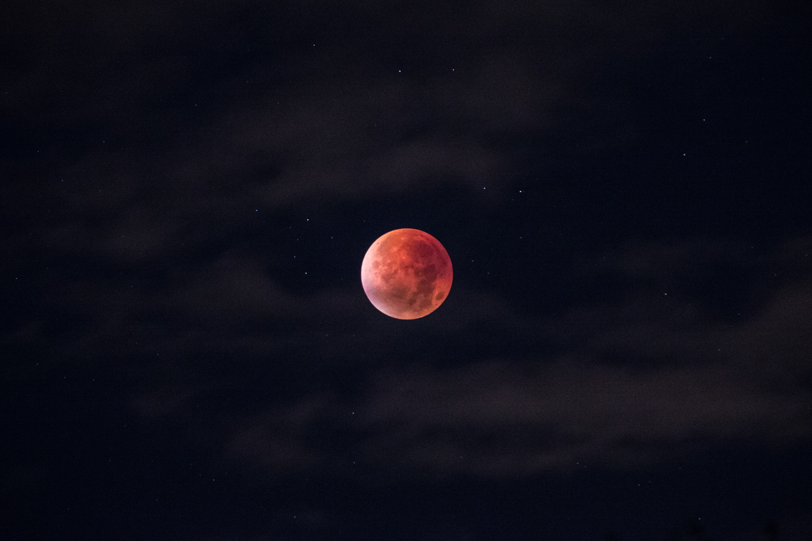

SAM RICOTTA
DEVELOPER
Currently studying at Le Wagon but have worked within the events industry for the last 5 years working in politics, telco, incentives and corporate events.
Favourite films

|
 |

|
DriveDrive is a 2011 American neo-noir crime thriller film directed by the Danish filmmaker Nicolas Winding Refn. The screenplay, written by Hossein Amini, is based on James Sallis' 2005 novel Drive. |
Call me by your nameCall Me by Your Name is a 2017 coming-of-age drama film directed by Luca Guadagnino and written by James Ivory, based on the 2007 novel of the same name by André Aciman. |
Jamon JamonJamón Jamón is a 1992 Spanish comedy/drama film directed by Bigas Luna and starring Javier Bardem, Jordi Mollá and Penélope Cruz in her debut film. It centers on a young woman named Silvia played by Cruz. |